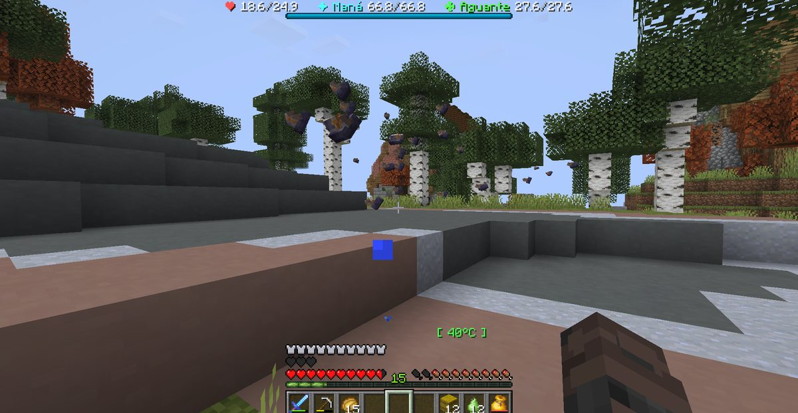

Boletín Oficial del Ayuntamiento del Reino · Se informa, no se alarma
EL HERALDO DEL REINO
Número 188 de septiembre de 2026Tarde del martes 8 de septiembre a la mañana del miércoles 9
BAJÓ LA NIEBLA Y CON ELLA OCHO MIL MOSQUITOS QUE NO SE VEÍAN
Atravesaban las paredes, apenas hacían ruido y de ellos solo se distinguían las alas. Causaron cinco de las catorce defunciones de la jornada y fueron la primera causa de muerte del Reino. La Encargada del Orden murió picada cuatro veces en diecisiete minutos. Preguntado si la niebla era normal o llevaba algo, el Ministerio contestó «las dos».
Redactado por la Oficina de Prensa del Ayuntamiento
PORTADA
«No me crucé con algunas, me crucé con cientos»: la jornada del enjambre

Las 16.42. El vecindario todavía los veía. Hora y cuarto después dejaron de verse y siguieron picando, que es lo que esta Oficina considera el agravante.Archivo Municipal · pase el ratón para revelarla
A las 16.41 de la tarde del martes, Cliqueame dejó dicha en la plaza la
primera frase de esta jornada: «hay unas moscas de mierda». Tres minutos después
añadió el primer dato y el peor: «me bajaron 20% de la armadura», y a
continuación, «pero me seguían como 15». Esta Oficina hace constar que a esa hora
quince parecía mucho.
Lo que llegó con la niebla no eran quince. El Ministerio de Obras y Pulsos
comunicó por la noche, sin que se lo pidiera nadie y con la naturalidad de quien lee una
cifra en un albarán, que había «más de 8000 mosquitos», y remató la comunicación
con dos palabras: «eso pasa».
Qué eran. La descripción buena la dio el mismo vecino a las 17.59 y esta
Oficina la reproduce entera porque es el único parte técnico que se ha redactado en este
Reino: «no me crucé con algunas, me crucé con cientos, están por todo el mapa,
invisibles, casi no emiten sonido, envenenan, solo se le ven las alas». Antes de eso
había avisado de lo que de verdad importaba: «atraviesan paredes, no hay dónde
esconderse». Y a las 17.44, la frase que ningún ayuntamiento quiere leer de un
vecino suyo: «no puedo jugar».
Lo que costaron. Catorce defunciones tuvo la jornada. Cinco fueron por
picadura, y con eso el insecto se convierte en la primera causa de muerte del
Reino, por delante de la caída, de los golems y de los propios vecinos. Cuatro de
esas cinco son de la misma persona y ocurrieron entre las 03.22 y las 03.39: la
Encargada del Orden murió picada cuatro veces en diecisiete minutos, y a
las 03.55 se ahogó, que a esas alturas es casi un descanso.
La niebla. Preguntado a las 21.45 por SerSM15 si aquello era
«niebla normal o tiene algún alucinógeno», el Ministerio contestó
«las dos». A las 21.51 el Emperador Duke dio el aviso de que se levantaba
—«se fue la niebla, así que no deberían quedar demasiados»— y a las 22.51,
una hora más tarde, LetayReaver escribía «invasión de sankudos alv». Esta
corporación no ve contradicción entre las dos cosas: la niebla se fue y los insectos se
quedaron, que es exactamente lo que suele hacer todo el mundo cuando se acaba la fiesta.
PORTADA
Repelente, sueño y un vecino que contesta las peticiones oficiales sin tener potestad
Las 17.59. No es una fotografía movida: eso que se ve son las alas. El resto del insecto estaba ahí.Archivo Municipal · pase el ratón para revelarla
Ante una plaga, el vecindario propone. Y lo que propuso queda recogido en el archivo
por si algún día hace falta.
La vía higiénica. A las 17.32, SerSM15 registró la primera
petición formal de la jornada: «metan repelente pa los mosquitos esos». Fue
contestada dos horas y media después por rockchango, con la única enmienda que
consta presentada: «mejor báñate primero». Esta Oficina no se pronuncia sobre el
fondo.
La vía del descanso. A las 17.46 se formuló la hipótesis de que los insectos se
retirasen si el vecindario dormía —«será que si dormimos se van»—, y fue
inmediatamente desmentida por quien conoce el paño: «yo les digo a estos mierdas que
duerman de vez en cuando, nunca quieren». La medida requería la colaboración de
trece personas y se archivó por falta de ella.
La vía administrativa, que es la que aquí interesa. A las 03.26 de la
madrugada, entre su segunda y su tercera picadura mortal, la Encargada del
Orden presentó por escrito una petición de que hubiera menos insectos, con la
motivación «son demasiados». Le contestó, a las 04.39, un vecino que no ostenta
cargo alguno en esta corporación, con dos palabras: «no, saludos».
Esta Oficina hace notar que la petición era correcta, la resolución fue rápida y el
resolvente no existía. Es la primera vez que en este Reino se contesta una instancia,
y a este Ayuntamiento le parece un avance del que conviene no sacar conclusiones.
ADMINISTRACIÓN
Un vecino invoca el artículo 6.282.828 de la Constitución del Reino, que no existe
Abrió la jornada, a las 13.02, una denuncia sobre un paso cerrado. El
denunciante, SerSM15, expuso su tesis con una firmeza que esta casa envidia:
«la vivienda estaba antes del puente», y a continuación citó la norma:
«lo dice en la constitución reinal, artículo número 6282828». Y añadió, para el
que no lo hubiera leído: «a ver si nos ponemos a leer».
El Ministerio pidió aclaración con estas palabras: «qué puente,
borracho». Aclarado el puente, informó a las 13.11 de que el paso ya estaba
abierto y de que se había cerrado «momentáneamente porque le pisaban los
cultivos», con lo que el asunto quedó resuelto antes de que nadie leyera nada.
Queda, eso sí, el artículo. Este Reino no tiene constitución: no consta que se
haya redactado, ni encargado, ni votado. Un texto con seis millones doscientos ochenta y
dos mil ochocientos veintiocho artículos sería, con diferencia, la obra pública más
ambiciosa emprendida aquí, muy por encima del puente que la motivó. Esta Oficina ha
abierto expediente de localización y confía en encontrarlo, porque la alternativa
—que un vecino haya invocado de memoria una norma inexistente y haya acertado con el
resultado— es administrativamente insostenible.
El propio denunciante cerró reconociendo el mérito ajeno —«Joan cumple muy bien con
la ley»— y el vecindario resumió la sesión a las 16.17, por boca de rockchango,
con una frase que este Ayuntamiento adopta como divisa: «factos, pero de los que te
pueden funar».
URBANISMO
Expediente 0072 — «la excavación de Kumadoru»: entregada sin techo y con descuento propuesto por el contratista
Consta en el archivo el parte de obra más honrado que ha recibido esta Oficina. Lo
remitió Mazitrvrs a las 06.23, dirigido a quien le había contratado, y dice
así en su integridad: «te saqué los 3 por lado y un bloque para abajo»; a
continuación, «el techo no, porque me aburrí y me fui»; y para terminar,
«después me pagas un poco menos por incumplimiento».
La propiedad contestó con una palabra —«piola»— y dio la obra por recibida.
Esta Oficina ha revisado sus ordenanzas y no encuentra ninguna que contemple que
el ejecutor se sancione a sí mismo, fije la cuantía y la cobre del propio precio.
Tampoco encuentra ninguna que lo prohíba. Se hace constar además que a las 05.14,
una hora y nueve minutos antes de abandonar los trabajos, el mismo vecino había recibido
una distinción del Reino cuyo nombre es, literalmente, «Obra Parada», lo que sitúa
el suceso más cerca de la profecía que de la negligencia.
Calificación de esta Oficina: SIN TECHO, PERO CON PRESUPUESTO CORREGIDO POR EL QUE
NO LO PUSO. Se recomienda al vecindario contratar a este vecino, que es el único que
te dice el precio final antes que tú.
URBANISMO
Expediente 0073 — Primera emigración por aglomeración: un vecino se va a cuatro mil bloques a levantar murallas
A las 00.24 de la madrugada, LetayReaver comunicó a la plaza que había
llegado a su destino y fundó algo. Se transcribe: «he llegado a las coordenadas de la
aventura, la historia comienza, levantar un pueblo y murallas, porque el invierno se
acerca». Un minuto después ya tenía forma de gobierno: «juntar a todas las razas y
un solo humana las comande, o sea yo».
El motivo consta y es urbanístico. Explicó que días atrás, avanzando por unas
salas con otra vecina, se encontró a un tercero construyendo por delante y a un cuarto
construyendo más adelante. Su alegación —«llegué primero, váyanse a otro lado»—
recibió la contestación que esta Oficina considera el diagnóstico de todo el planeamiento
del Reino: «loco, si te has dado cuenta, vivimos todos a lado». Respuesta del
interesado, íntegra: «ptm».
Sobre el solar elegido, el Ministerio informó de que hay al lado «un volcán activo,
exacto», dato que el interesado recibió con un «está increíble». Y hubo
además oferta de servicio de mudanzas: el Ministerio se comprometió a trasladarle
la casa entera desde su isla anterior —«si quieres te la copio aquí de vuelta»—,
prestación que no figura en ninguna ordenanza de este Reino, que no se cobra
y que nadie le había pedido. Esta Oficina lo hace constar sin atribuir intención.
El beneficiario puso una sola condición, a las 00.31: que se hiciera cuando cierto
vecino no estuviera delante, «quiero ver su reacción».
Calificación: MURALLA PREVENTIVA. Con una advertencia del Negociado del
Almanaque, que hoy sí ha mirado el calendario: el invierno que se acerca está a
ochenta y siete días. Levantar una muralla contra él ahora es, técnicamente, ir con
tres meses de adelanto, y este Ayuntamiento no tiene ningún antecedente de eso.
ANOMALÍAS
La maquinaria del Ministerio derribó al Ministro dos veces en dos minutos
Consta en el registro de defunciones que a las 21.47 el Ministro Pan fue
derribado por un golem rojo, y que a las 21.48, sesenta segundos después,
fue derribado por un golem de arcilla. Los dos son dotación reciente de este
Reino y los dos figuran en el inventario del propio Ministerio.
La versión oficial la dio el interesado en el tablón a las 23.02 y esta Oficina la
reproduce sin tocarla, incluidas las tres partes: primero atribuyó el hecho al Emperador;
luego se desdijo —«se activó solo», «no fue Duke»—; y finalmente lo
clasificó: «la rebelión de las máquinas». Nadie le había preguntado.
Este Ayuntamiento considera el episodio rutinario y sin gravedad alguna, y hace
notar únicamente que es la primera vez que un cargo de esta corporación es derribado por
material que él mismo dio de alta. También en esa franja se registraron avisos de
cierre técnico que se anunciaban solos, sin que constara orden de nadie, y que fueron
retirados por el propio Ministerio con la fórmula «ya le paramos los pies».
Se completa el parte con dos hechos menores. A las 03.24, kum4shiro
preguntó a otra vecina si ella también veía «esas partículas raras»; la
contestación fue «sí», y ahí acabó la investigación. Y a las 22.43,
ArsarFurro cerró el capítulo de los insectos con la única cuantificación
patrimonial de la noche: «con razón perdí 40 diamantes».
SERVICIOS
El puesto de tabaco dice «clic derecho para vender» y luego se calla
«No cumples la condición para abrir este menú», cuatro veces seguidas y sin decir cuál era la condición. Arriba, la estanquera terminando su cigarro.Archivo Municipal · pase el ratón para revelarla
Reclamación de Cliqueame, presentada a las 06.43 con fotografía:
«puse un tabaco en venta en el cofre al lado de la Yaniko pero no recibí pago».
Practicadas las comprobaciones, esta Oficina informa de que el vecino no ha perdido
nada: el arca estaba vacía y la mercancía no llegó a entrar. El puesto de la señora
Yaniko compra género únicamente a quien haya tramitado antes su expediente con
ella, requisito que el reclamante no había iniciado y que, esto es lo grave,
nadie le había comunicado: el rótulo del arca invita a vender y a continuación no
dice absolutamente nada, ni que sí ni que no ni por qué.
Se adopta medida correctora: el arca pasará a decir en voz alta lo que hasta
hoy solo pensaba. Y se informa al reclamante de que el trámite empieza dos pasos más
allá, con Nico, que es quien presenta a la estanquera. Esta corporación agradece
la reclamación y lamenta que hiciera falta.
SERVICIOS
EL PARTE DEL PULSO — nueve dotaciones nuevas, y una de ellas se comió la jornada
Las altas. Se dio de alta LA NIEBLA, con su cortejo de insectos, cuyo
comportamiento en las primeras horas de servicio ocupa la portada de este número. Entró
además el GOLEM ROJO, señor del desierto, que avisa antes de disparar y golpea de
forma que se te lleva por delante; el GOLEM DE ARCILLA, que levanta ventiscas de
verdad y que ya recorre desierto, tierras rojas y sabana; la ARAÑA DE TORMENTA;
una planta carnívora que no se mueve, no suelta nada y muerde al que se le acerca;
y una patata explosiva enterrada en la sabana, con mecha, por si el resto parecía
poco. Se estrenó también la careta que borra el nombre de quien la lleva: quien se
la ponga dejará de figurar en los partes, aunque esta Oficina advierte, para evitar
entusiasmos, que el aparato de huellas del cuerpo lo sigue identificando igual.
Las obras. Abrió LA GRANJA DE LA AMISTAD INFINITA, con tres encargos, su
altavoz y los ocho sermones de Ramiro; volvió a dar servicio LA SEMILLERA,
que llevaba tiempo constando como cerrada en el archivo y resulta que estaba abierta;
y se ha empezado a tomar medidas de la finca del Ministro P. a cuenta del asunto
de los Corderos, diligencia sobre la cual esta Oficina no adelanta nada.
Las medidas correctoras. Los insectos atravesaban las paredes y se ha
corregido · la niebla no llegaba a verse aunque estuviera puesta, y ahora sí ·
al levantarse la niebla los insectos se quedaban, y ya no · se les ha puesto
tope, y por primera vez la cifra la lleva alguien · la araña caminaba de
espaldas · seis efectos de poción no existían y se anunciaban igual · los
cuadros y los marcos del castillo se podían arrancar · una puerta llevaba un día
dejando pasar sin comprobar nada · un encargo se entregaba entero sin quedar
completado · los avisos de lluvia ácida anunciaban lluvia y no caía una gota ·
y el arca de la estanquera, que se cuenta arriba.
Ninguna de estas incidencias reviste gravedad y todas estaban previstas.
SOCIEDAD
Un vecino solicitó su propio arresto y declaró el motivo
A las 05.21 de la madrugada, en plena noche de insectos y a once minutos de las
dos defunciones, ArsarFurro se dirigió a la Encargada del Orden con una petición
que consta y que esta Oficina no había visto nunca: «Gabby, arréstame». Requerido
el motivo por el procedimiento habitual, que es que no lo requirió nadie, lo aportó él
solo: «soy culpable de amar con mucha intensidad».
No se practicó la detención. El solicitante procedió entonces a realizar, delante del
edificio de la ley, un acto que consta descrito por él mismo en el registro y que esta
Oficina, que publica sin filtro pero también sin fotografías, clasifica en el epígrafe
de manifestaciones espontáneas de carácter personal ante edificio público y no
detalla. El expediente se abrirá el día que exista el epígrafe.
Se hace constar, por rigor, que el vecindario aportó antecedentes sobre la intensidad
alegada por un tercero —«ese wey ya decía te amo cuando llevaban dos semanas de
novios», Rockchango, 05.22—, y que en este Reino eso todavía no es delito.
SOCIEDAD
Tres caídas en dieciséis minutos, y a los dieciocho una distinción por bajar mil bloques
Gaaraham03 pronunció siete palabras en toda la jornada, repartidas en tres
intervenciones, y una de ellas fue «préstame una cubeta plox». Fue a las 08.32,
justo entre su primera caída desde altura y la segunda.
Cayó a las 08.22, a las 08.32 y a las 08.38. Y a las 08.56
y 08.57 el Reino le concedió dos distinciones seguidas, la última de ellas
«Mil Bloques Hacia Abajo». Esta Oficina ha comprobado el expediente y confirma que
los bajó. Sobre el método no se pronuncia, porque el reglamento de distinciones
del Reino no exige ninguno y, visto lo visto, hace bien.
Gabinete de Higiene Mental del Ayuntamiento · consulta no solicitada
EL DIVÁN DEL REINO
Se estudia al vecino porque el insecto no se deja
Jornada de catorce defunciones, de las cuales cinco se produjeron por picadura de un animal que no se veía. Este Gabinete ha renunciado a examinar al animal, por las razones obvias, y ha dedicado la consulta de hoy a los doscientas sesenta y cuatro intervenciones que el vecindario dejó en el registro mientras aquello ocurría. De ellas, sesenta y dos son de una sola persona, y esa persona pasó la noche fundando un reino a cuatro mil bloques de aquí.
LetayReaver
La Muralla
Fundación reactiva
«Juntar a todas las razas y un solo humana las comande, o sea yo»LetayReaver, a las 00:25
Perfil
62 de las 264 intervenciones de la jornada: una de cada cuatro palabras
pronunciadas en este Reino durante veinte horas salió de este sujeto. 504 palabras
en total, más del doble que el siguiente, y 13 de las 34 preguntas
registradas. El Gabinete señala que no es locuacidad ociosa: pregunta para
decidir, y decide.
La jornada
El sujeto emigró. El motivo declarado no es el miedo ni la ambición sino
la aglomeración: tres vecinos construyendo a la vez sobre el mismo suelo y la
contestación que recibió al protestar, «vivimos todos a lado». Entre el disgusto
y la fundación de un estado propio con forma de gobierno definida transcurrieron
veinticuatro horas. Este Gabinete lo clasifica como fundación reactiva: el
sujeto no huye de un sitio, hace otro. Se anota, por último, la única condición
que puso al traslado: que se ejecutara cuando cierto vecino no estuviera delante,
para verle la cara. El Gabinete no considera esto un rasgo patológico, sino
el motivo real de la mudanza.
Escalas del gabinete (sobre 10)
Iniciativa10
Apego al domicilio anterior2
Necesidad de espacio propio9
Previsión meteorológica10
Ajuste de esa previsión al almanaque1
Pronóstico para la próxima jornadaExcelente y con reservas de calendario. El sujeto levanta murallas contra un invierno que está a ochenta y siete días; el Gabinete considera que para cuando llegue el frío tendrá una ciudad, y que ese siempre fue el plan.
Cliqueame
El Parte
Vigilancia documentada
«No puedo jugar»Cliqueame, a las 17:44
Perfil
28 intervenciones y las ocho fotografías de la jornada, todas suyas. En el
archivo de este Reino no consta una sola queja de este sujeto sin imagen
adjunta. El Gabinete subraya que la descripción que resolvió la plaga
—«invisibles, casi no emiten sonido, envenenan, solo se le ven las alas»— no la
redactó ninguna oficina: la redactó él, de pie y mientras le picaban.
La jornada
Fue el primero en avisar, a las 16.41, y el último en marcharse: se
retiró a las 17.59, hora y dieciocho minutos después, y solo tras haber
informado. La frase con la que se fue —«me tuve que salir porque me van a romper
la armadura, casi no se puede caminar»— es, en opinión de este Gabinete, la
definición clínica de aguantar de más. Se hace constar que la única aportación
patrimonial que hizo esa noche fue ofrecerle a otro vecino, que acababa de perder
cuarenta diamantes, unos diamantes que no tenía.
Escalas del gabinete (sobre 10)
Precisión descriptiva10
Sentido del deber informativo9
Tolerancia al enjambre3
Capacidad de quedarse callado1
Pronóstico para la próxima jornadaMuy bueno. El sujeto es el aparato de medida de este Reino y no cobra por serlo. Se le recomienda retirarse antes, aunque este Gabinete reconoce que si se hubiera retirado antes no tendríamos portada.
kum4shiro
El Préstamo
Segunda consulta, tampoco solicitada
«Letay, ¿tienes huesos? ¿Y zanahorias?»kum4shiro, a las 08:45
Perfil
26 intervenciones con una media de 2,8 palabras: el más breve de cuantos
hablan. De sus ocho preguntas, cinco piden un material a otro vecino
—prismarina, obsidiana, huesos, zanahorias— y ninguna pide indicaciones para
conseguirlo. El Gabinete anota que el sujeto no busca: convoca, y que en este
Reino eso funciona casi siempre.
La jornada
Casi siempre. A las 05.26 convocó mano de obra y nombró a tres vecinos. Uno
declinó, otro alegó carga de faena y el tercero se ofreció. A las 05.30 el sujeto
constaba fallecido a manos del que se ofreció; a las 05.41, once minutos después, a
manos del que había alegado carga de faena. Entre las dos cosas escribió una palabra,
«llega», y no consta que escribiera ninguna más sobre el asunto. El Gabinete
califica el episodio de confianza sin garantía y hace constar que a las 07.53
el sujeto seguía prestando material a los demás.
Escalas del gabinete (sobre 10)
Confianza en el prójimo10
Rencor acumulado0
Economía de palabras9
Criterio a la hora de contratar1
Autoabastecimiento1
Pronóstico para la próxima jornadaBueno, y sin necesidad de tratamiento. Un vecino al que matan dos veces las dos personas que llamó a trabajar, y que a las dos horas les sigue prestando zanahorias, no tiene un problema psicológico: tiene un carácter, y este Reino se sostiene sobre él.
GabbyQuill635
El Expediente
Sobrecarga con cauce correcto
«Oye secuestrador, tal vez para ti no fue muy divertido, pero Pan se tiró más de una hora viéndome sufrir»GabbyQuill635, a las 00:05
Perfil
Doce palabras en toda la jornada dentro del Reino, en tres intervenciones. Es
la vecina que menos habla y la que más muere —cinco defunciones, la primera de la
tabla—, y además es la Encargada del Orden. El Gabinete no encuentra en el
registro ningún momento en que las tres cosas se estorben.
La jornada
Cuatro picaduras mortales en diecisiete minutos y una quinta muerte en el agua
dieciséis minutos después. Lo relevante para esta consulta es lo que hizo en
medio: a las 03.26, entre la segunda picadura y la tercera, redactó una petición
por escrito y por el cauce correcto para que hubiera menos insectos. Le contestó un
vecino sin potestad alguna: «no, saludos». El sujeto no insistió, no protestó y
no volvió sobre ello. Horas antes, a las 00.05, había contestado por escrito a quien la
amenaza y no habló del dinero: le comunicó que su amenaza había quedado la
segunda de la noche.
Escalas del gabinete (sobre 10)
Aguante9
Economía de palabras10
Confianza en el cauce oficial8
Reconocimiento obtenido por ese cauce0
Capacidad de contestar a quien la amenaza10
Pronóstico para la próxima jornadaReservado en la forma y sólido en el fondo. Este Gabinete hace constar que el sujeto lleva trece días recibiendo carteles, cartas y trampas en su propia puerta y que en todo ese tiempo no ha acusado a nadie sin fecha y sin hora, cosa que ni este periódico ni esta corporación pueden decir de sí mismos.
Gaaraham03
La Vertical
Aprendizaje por repetición
«Préstame una cubeta plox»Gaaraham03, a las 08:32
Perfil
Siete palabras en toda la jornada, en tres intervenciones. El vecino más
callado del registro por un margen que este Gabinete considera clínicamente
irrelevante y humanamente admirable.
La jornada
Tres caídas desde altura en dieciséis minutos: 08.22, 08.32 y 08.38. La
petición de la cubeta se produjo exactamente entre la primera y la segunda, lo cual
indica una hipótesis. A las 08.56 y 08.57 obtuvo dos distinciones seguidas, la
última por descender mil bloques. El Gabinete señala que el sujeto no abandonó el
descenso en ningún momento: cambió el método tres veces y llegó abajo.
Escalas del gabinete (sobre 10)
Constancia10
Verbalización1
Aprovechamiento del descenso9
Consulta previa de la altura0
Pronóstico para la próxima jornadaÓptimo. El sujeto es el único vecino de esta consulta que terminó la jornada exactamente donde quería estar, y lo hizo sin comentarlo.
El Ministro Pan
La Firma
Sin hallazgos
«Las dos»El Ministro Pan, a las 21:45
Perfil
55 intervenciones, el segundo que más habló. Preguntado si la niebla era normal o
llevaba algo, contestó «las dos». Este Gabinete no halla en el sujeto rasgo
alguno digno de estudio.
La jornada
Consta derribado dos veces en dos minutos por maquinaria dada de alta por su propio
Ministerio, extremo sobre el cual emitió un desmentido en tres partes que nadie le había
pedido. Este Gabinete carece de competencia sobre cargos cuya obtención no consta
y se abstiene. Se hace constar, como en anteriores consultas, que el interesado no
había preguntado.
Escalas del gabinete (sobre 10)
Rasgos hallados0
Pronóstico para la próxima jornadaInmejorable, y sin base para decirlo.
Las escalas son de elaboración propia, no están homologadas por nadie y se obtienen contando lo que consta en el registro. Quien no se reconozca en su ficha puede solicitar otra, que será idéntica.
El Gabinete
Sucesos · Sumario del día
LO QUE ESTA OFICINA HA PODIDO ESTABLECER
Persona ignorada
SUCESOS
Venció el plazo de las veinticuatro horas: nadie pagó, no llegó tercera carta y el pueblo abrió una colecta
El escrito anónimo que este Diario reprodujo ayer daba veinticuatro horas para
dejar trescientos cacahuates delante de una puerta, y anunciaba que, de no
hacerse, se llevaría además la mascota de otro vecino. El plazo venció durante
esta jornada. Esta Oficina llevaba el reloj puesto desde ayer y da cuenta de lo que
encontró al pararlo, punto por punto y sin adornar:
Uno. No consta que se dejara ni un cacahuate delante de esa puerta.
Dos. No ha desaparecido la mascota de ningún otro vecino, ni consta denuncia por
ello. Y tres. No ha llegado a esta redacción una tercera carta, ni a la puerta un
séptimo cartel. Del animal, que consta fallecido desde el 3 de septiembre y sale de pie
en las dos fotografías, tampoco hay noticia.
De modo que el Reino no pagó, no contestó a la cifra y no le pasó nada. Esta
corporación se abstiene de apuntarse el mérito de una política que no ha tomado, y deja
constancia de que no hizo absolutamente nada y de que salió bien.
Lo que sí pasó, y no estaba previsto. A la 01.59 de la madrugada,
Kumadoru propuso en el tablón del vecindario lo siguiente: «y si entre todos
ponemos pal rescate». A las 07.16, la interesada lo daba por abierto con
cinco palabras y una cara triste: «se aceptan donativos para el rescate». Este
pueblo no ha pagado un rescate: ha abierto una suscripción, que es más lento, más
caro de gestionar y considerablemente más de aquí.
La contestación. Y hubo respuesta al remitente, aunque no de la clase que él
pedía. A las 00.05, la destinataria escribió en el tablón, dirigiéndose a él por
su oficio: «oye secuestrador, tal vez para ti no fue muy divertido, pero Pan se tiró
más de una hora viéndome sufrir; él sí se está divirtiendo». La carta empezaba
diciendo «pensaba que esto sería más emocionante». Es la primera vez que a alguien
que amenaza por escrito en este Reino se le contesta que ha quedado segundo.
SUCESOS
La denunciante cuenta tres agresores distintos, y de uno dice el nombre en voz alta
A las 13.01 del martes, SerSM15 formuló en el tablón la pregunta que
llevaba doce días sin hacerse: «¿es el mismo acosador y el de los hornos?».
Contestó la interesada a las 16.59, y su respuesta parte el expediente en tres:
«yo sospecho que son personas diferentes», y a continuación, «por lo que
entiendo, he recibido ataques de 3 personas diferentes».
Esta Oficina recuerda lo que consta desde el 27 de agosto contra ese mismo domicilio:
los pandas y los loros, los hornos, las veinte lámparas, los bloques arrancados de la
pared, seis carteles en tres madrugadas, una trampa con veneno y dos cartas. Hasta
hoy se había contado como una sola cosa porque le pasaba a una sola persona, que es un
criterio cómodo y, por lo visto, equivocado.
Y hay un avance. A las 04.50, en mitad de la noche de los insectos, la misma
vecina dijo en la plaza que ya sabe quién le puso las trampas de veneno, y dijo el
nombre. Lo dijo en voz alta, delante de quien estuviera, y este Diario no lo
reproduce: de los tres, ella da uno por identificado, y a quién se lo atribuye es
cosa de un expediente y no de un periódico. Esta Oficina se limita a hacer constar que
la frase existe, que tiene hora y que la oyó más gente.
SUCESOS
Dos defunciones a manos de vecinos, once minutos, y la pregunta de rockchango
El acta de la primera, y debajo la única diligencia que se practicó: una pregunta y su respuesta.Archivo Municipal · pase el ratón para revelarla
A las 05.26, kum4shiro convocó mano de obra en la plaza y nombró a tres
vecinos. Las contestaciones constan y merecen leerse en orden. El primero: «no».
El segundo, ArsarFurro: «yo ya tengo mucha chamba». Y el tercero,
Mazitrvrs, a las 05.30: «agarro un par de herramientas y voy».
A las 05.30, el convocante constaba fallecido a manos de ese tercero, con un
cuchillo. A las 05.39 el mismo vecino avisaba de que iba de camino
—«yendo kum»—, y a las 05.41 el convocante escribió «llega». En ese
mismo minuto volvía a constar fallecido, esta vez con un hacha y a manos del segundo, el
que había dicho que ya tenía faena.
Once minutos, dos defunciones y una sola herramienta que llegó a usarse para lo
que se había pedido: ninguna. No consta protesta del interesado.
La diligencia. A las 05.30, en la propia plaza, Rockchango preguntó
«dónde está la ley» y se contestó él solo: «durmiendo como siempre». Dos
minutos después lo presentó por escrito y con fotografía: «increíble, hay asesinatos
en el Reino y la ley está presente y no hace nada».
Esta Oficina hace constar el matiz, porque es el que duele: la ley estaba
presente. La Encargada del Orden figuraba dentro del Reino a esa hora, y a esa hora
llevaba dos horas de picaduras. No se abrió expediente por ninguna de las dos
defunciones. Anteayer, el primer expediente de la historia de este pueblo se instruyó
y se resolvió en siete minutos y recaudó cuatrocientos cacahuates. Ayer hubo dos
muertos y cero papel. Esta corporación no saca conclusión: publica los dos tiempos
uno debajo del otro y sigue.
Oficina de Prensa · Negociado de Orden y Convivencia
El parte de la jornada
Duración de la jornada
20 h 11 min, de las 14:37 a las 10:48
Cuentas en el Reino
13 — 11 vecinos y 2 de esta administración
Altas tramitadas
0
Máxima concurrencia
6 a la vez, a las 05:25
Defunciones
14
De ellas, por picadura
5
De ellas, causadas por otro vecino
2
Vecina con más defunciones
GabbyQuill635, 5
Primera causa de muerte
el insecto de la niebla, y es la primera vez
Insectos declarados por el Ministerio
más de 8.000
Paredes que los detuvieron
0
Minutos que tardó el Ministerio en devolver lo perdido por un vecino picado
7
Peticiones formales de que hubiera menos insectos
1
Resueltas por quien no tiene potestad para resolverlas
1
Cantidad exigida por la carta anónima
300 cacahuates
Horas de plazo que daba
24
Cacahuates dejados delante de la puerta
0
Mascotas de otros vecinos desaparecidas
0
Terceras cartas recibidas en esta redacción
0
Colectas abiertas por el vecindario
1
Partidas de esta corporación para rescates
0
Agresores distintos que cuenta la denunciante
3
De ellos, los que ella da por identificados
1
Nombres que ha impreso este Diario
0
Defunciones a manos de vecinos
2, la misma persona en once minutos
Expedientes abiertos por ellas
0
Minutos que tardó la instrucción del primer expediente del Reino
7, y fue anteayer
Reclusos
0
Artículo de la constitución invocado en una denuncia
6.282.828
Artículos que consta que tenga la constitución del Reino
no consta que haya constitución
Obras entregadas sin techo
1
Descuentos propuestos por el propio contratista
1
Distinciones llamadas «Obra Parada» concedidas esa madrugada
1, al mismo vecino
Vecinos emigrados por aglomeración
1, a cuatro mil bloques
Días que faltan para el invierno contra el que levanta murallas
87
Volcanes activos junto al nuevo solar
1, y le pareció bien
Mudanzas de casa entera ofrecidas por el Ministerio
1
Ordenanzas que las contemplan
0
Cargos de esta corporación derribados por su propia maquinaria
1, dos veces en dos minutos
Desmentidos que no había pedido nadie
1, en tres partes
Puestos que anuncian que compran y no compran
1
Días que avanzó el almanaque
24
Estaciones que se acabaron esta noche sin avisar
1
Lecturas de temperatura por encima de la banda oficial
5 de 5
Jornadas de Fátima sin acudir a su puesto
16
Lagomorfos avistados
0, por decimosexta jornada
Jornadas de Don Clocencio sin fecha de juicio
14
Reuniones de la Comisión del Subsuelo Rentable
0
Aviso oficial
Sobre la niebla y lo que venía dentro, este Ayuntamiento informa de lo siguiente.
Primero, que la niebla es una dotación nueva y ordinaria, que se levantó a la
hora prevista y que se comportó como estaba escrito. Segundo, que los insectos que la
acompañaban también estaban previstos, si bien no en esa cantidad, y que la cantidad
es un asunto del Negociado de Cantidades, que ya tiene puesto un tope. Y tercero, que
la circunstancia de que atravesaran las paredes ha sido corregida y que esta
corporación no considera necesario explicar por qué las atravesaban.
Se hace constar, no obstante, una observación de rigor administrativo. Esta Oficina
ha revisado la jornada y encuentra que la única descripción útil de la plaga
—cuántos eran, que no se veían, que no sonaban y que envenenaban— la redactó un vecino de
pie y mientras le picaban, y que la única petición formal de que hubiera menos
la firmó otra vecina entre su segunda y su tercera defunción. Ninguna de las dos
personas cobra de esta corporación. Se les agradece el trabajo y se les recuerda que esta
casa no tiene forma de pagarlo.
En cuanto al escrito anónimo cuyo plazo vencía en esta jornada: no se pagó, no
se contestó a la cifra y no ocurrió ninguna de las cosas que anunciaba. Este Ayuntamiento
no dictó medida alguna al respecto, no dio instrucciones a nadie y no piensa presentarlo como
un éxito, aunque le costará. Lo que sí hace constar, porque le parece lo único importante del
número, es que lo que salió a la calle no fue el dinero: fue una colecta, abierta por
un vecino a la una y cincuenta y nueve de la madrugada y aceptada por la interesada a las
siete y dieciséis. Esta corporación no tiene partida para rescates y sigue sin tenerla. El
vecindario, que tampoco, ha reunido una en seis horas.